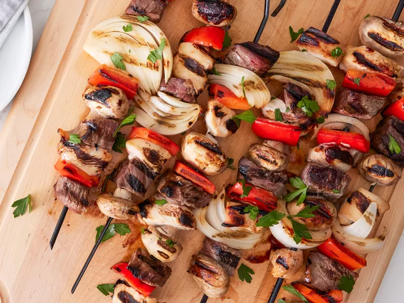

Kabobs

Description
These grilled kabobs made with steak and chicken stay moist and flavorful. The meat and vegetables are marinated in a honey teriyaki sauce, then skewered and grilled until tender and delicious.
Prep Time: 30 mins
Cook Time: 10 mins
Additional Time: 4 hr
Total Time: 4 hrs 40 mins
Servings: 10
Ingredients
- Sauces: The marinade starts with a sweet-savory mixture of teriyaki sauce and honey.
- Seasonings: Garlic powder and ground ginger give the marinade loads of bold flavor.
- Meat: These meaty kabobs call for both chicken breasts and a pound of beef sirloin.
- Vegetables: You'll need bell peppers, sweet onions, and whole fresh mushrooms.
How to Make Kabobs
- Make the marinade.
- Marinate the meat and vegetables.
- Thread the ingredients onto skewers.
- Grill the kabobs over medium-high heat.